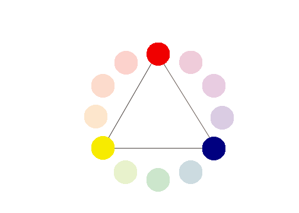
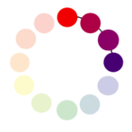

Shakshat Virtual Lab 
INDIAN INSTITUTE OF TECHNOLOGY GUWAHATI
The color wheel
A color wheel or color circle is an abstract illustrative organization of color hues around a circle that shows relationships between primary colors, secondary colors, complementary colors.

Primary Colors
Colors at their basic essence; those colors that cannot be created by mixing others. e.g. Red, yellow and blue.

Secondary Colors
Those colors achieved by a mixture of two primaries. e.g. Green, orange and purple

Tertiary Colors
Those colors achieved by a mixture of primary and secondary hues. e.g. Yellow-orange, red-orange, red-purple, blue-purple, blue-green & yellow-green

Complementary Colors
Those colors located opposite each other on a color wheel.

Analogous Colors
Those colors located close together on a color wheel.

( Above content can be referenced at http://www.worqx.com/color/color_wheel.htm )
Color Context
How color behaves in relation to other colors and shapes is a complex area of color theory. Compare the contrast effects of different color backgrounds for the same green square in figure below.